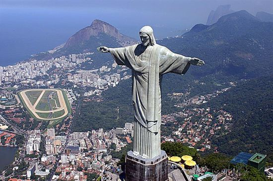

CHRIST REDEEMER: RIO DE JANEIRO

A view of the Corcovado before the construction, 19th century.
Aerial view of the statue, with Rocinha and the Leblon neighbourhood in the backgroundThe idea of building a large statue atop Corcovado was first suggested in the mid-1850s, when Vincentian priest, Pedro Maria Boss, suggested placing a Christian monument on Mount Corcovado to honour Princess Isabel, princess regent of Brazil and the daughter of Emperor Pedro II, although the project was never approved.[1] In 1889, the country became a republic and, with the official separation of state and church, the idea was dismissed.[7]
The second proposal for a landmark statue on the mountain was made in 1920, by the Catholic Circle[clarification needed] of Rio.[8][better source needed] The group organized an event called Semana do Monumento ("Monument Week") to attract donations and collect signatures to support the building of the statue. What motivated the organization was what they perceived as 'Godlessness' in the society at the time. The donations came mostly from Brazilian Catholics.[4] The designs considered for the "Statue of the Christ" included a representation of the Christian cross, a statue of Jesus with a globe in his hands, and a pedestal symbolizing the world.[9] The statue of Christ the Redeemer with open arms, a symbol of peace, was chosen.
Local engineer Heitor da Silva Costa designed the statue; it was sculpted by Polish-French sculptor Paul Landowski.[10]
The face of the statue was created by Romanian sculptor Gheorghe Leonida, who was born in Galati, Romania, in 1893. He studied sculpture at the Fine Arts Conservatory in Bucharest, then, after three more years' study in Italy, he won a prize for the sculpture Reveil ("Awakening"). After that he moved to Paris, where his work, Le Diable ("The Devil"), was awarded the Grand Prix. Becoming famous in France as portraitist, he was included by Paul Landowski in the team that started working on Christ the Redeemer in 1922. Gheorghe Leonida contributed by portraying Jesus Christ's face on the statue, which made him famous.[11][12]
A group of engineers and technicians studied Landowski's submissions and the decision was made to build the structure out of reinforced concrete (designed by Albert Caquot) instead of steel, more suitable for the cross-shaped statue. The outer layers are soapstone, chosen for its enduring qualities and ease of use.[5] Construction took nine years, from 1922 to 1931 and cost the equivalent of US$250,000 ($3,300,000 in 2016). The monument was opened on October 12, 1931.[5][6] During the opening ceremony, the statue was supposed to be lit by a battery of floodlights turned on remotely by shortwave radio pioneer Guglielmo Marconi, stationed 5,700 miles (9,200 km) away in Rome but due to bad weather they were turned on on site.[8]
A view of the statue at nightIn October 2006, on the 75th anniversary of the statue's completion, Archbishop of Rio, Cardinal Eusebio Oscar Scheid, consecrated a chapel, named after Brazil's patron saint—Our Lady of the Apparition, under the statue. This allows Catholics to hold baptisms and weddings there.[6]
The statue was struck by lightning during a violent thunderstorm on February 10, 2008, and suffered some damage to the fingers, head and eyebrows. A restoration effort was put in place by the Rio de Janeiro state government to replace some of the outer soapstone layers and repair the lightning rods installed on the statue. It was damaged by lightning again, on January 17, 2014, where a finger on the right hand was dislodged.[13][14][15][16]
In 2010, a massive restoration of the statue was undertaken. The statue was washed, the mortar and soapstone that cover the statue were replaced, the internal structure of iron was restored, and the monument was made waterproof. The statue was vandalized during renovation, wherein paint was sprayed along the arm. Mayor Eduardo Paes called the act "a crime against the nation". The culprits later apologized and presented themselves to the police.[17][18][19]
Restoration[edit]
A close-up view of the faceIn 1990, restoration work was conducted through an agreement among several organizations, including the Archdiocese of Rio de Janeiro, media company Rede Globo, oil company Shell do Brasil, environmental regulator IBAMA, National Institute of Historic and Artistic Heritage, and the city government of Rio de Janeiro.
More work on the statue and its environs was conducted in 2003 and early 2010. In 2003, a set of escalators, walkways, and elevators were installed to facilitate access to the platform surrounding the statue. The four-month restoration in 2010[20] focused on the statue itself. The statue's internal structure was renovated and its soapstone mosaic covering was restored by removing a crust of fungi and other microorganisms and repairing small cracks. The lightning rods located in the statue’s head and arms were also repaired, and new lighting fixtures were installed at the foot of the statue.[21]
The restoration involved one hundred people and used more than 60,000 pieces of stone taken from the same quarry as the original statue.[20] During the unveiling of the restored statue, it was illuminated with green-and-yellow lighting in support of the Brazil national football team playing in the 2010 FIFA World Cup.[20]
Maintenance work needs to be conducted periodically due to the strong winds and erosion to which the statue is exposed, as well as lightning strikes.[22] The original pale stone is no longer available in sufficient quantities, and replacement stones are increasingly darkerss in hue.[23]